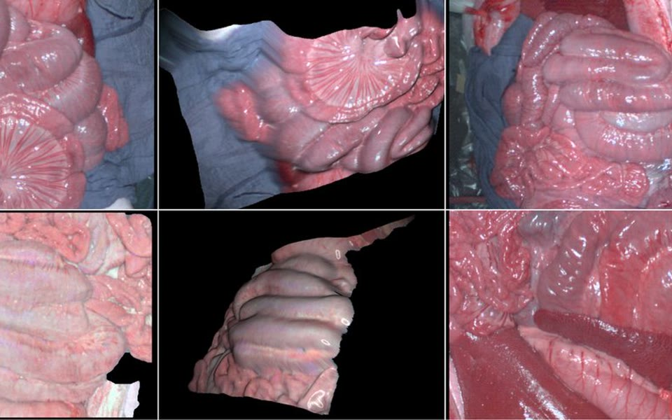
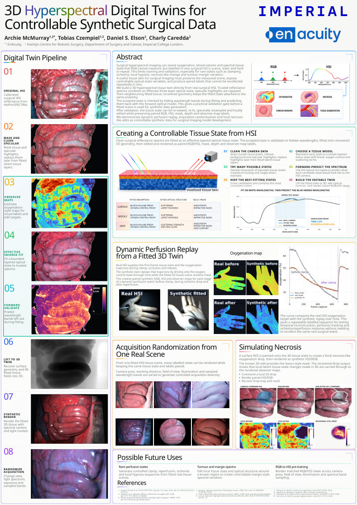
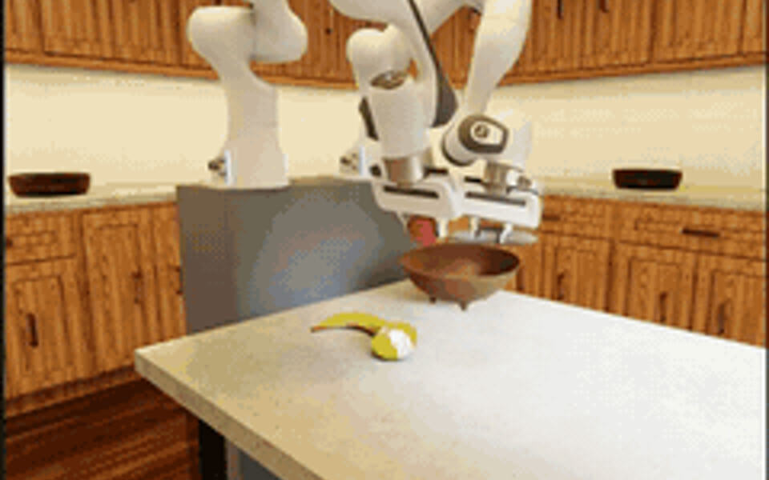
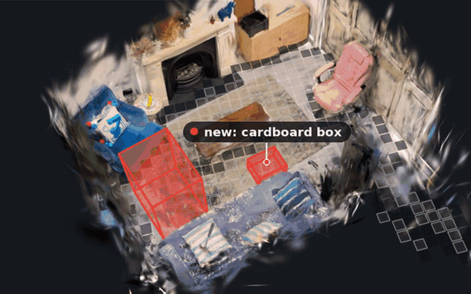
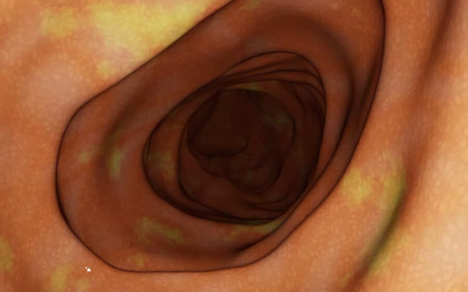
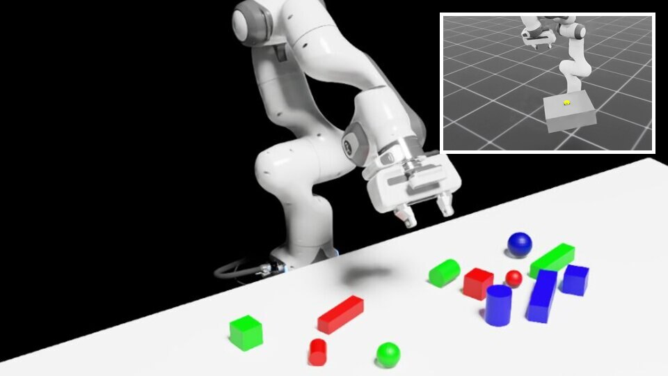
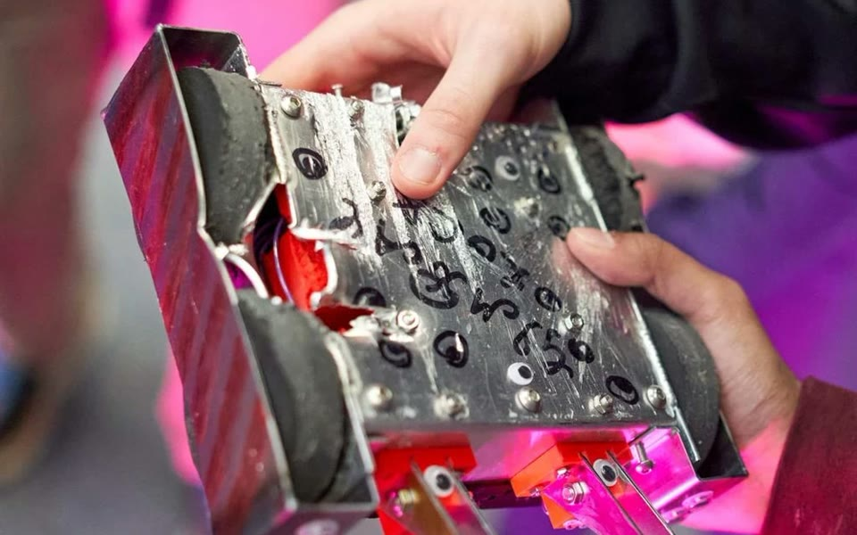
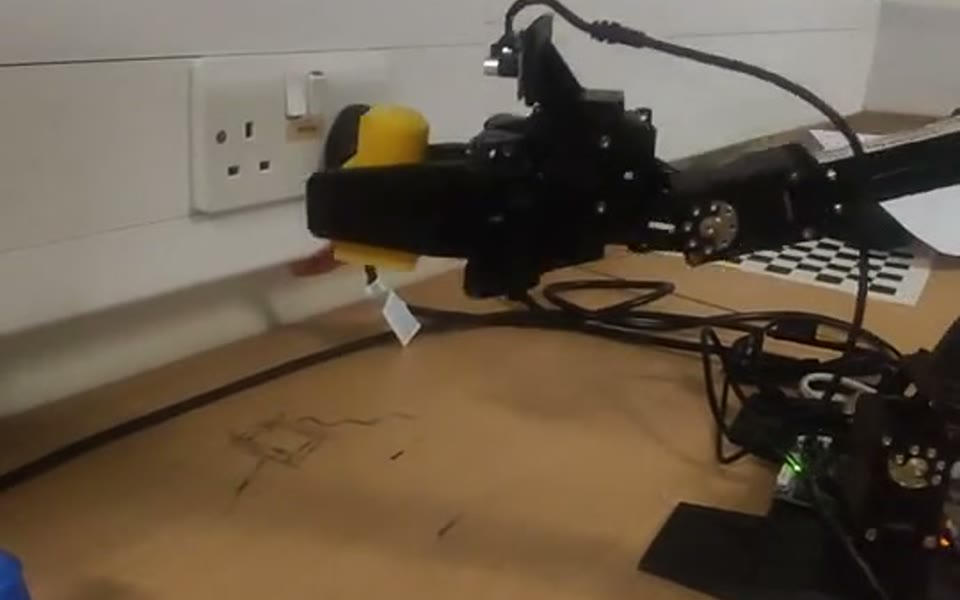

Archie McMurray, first author · IPCAI 2027, under review
A single hyperspectral or RGB laparoscopic frame is lifted to a 3D surface that keeps its measured appearance, then re-rendered under new viewpoints, deformation, lighting and blood oxygenation with exact pixel correspondences and labels. This is the follow-on to my MRes thesis.

Archie McMurray, Tobias Czempiel, Daniel S. Elson, Charly Caredda · Hamlyn Symposium on Medical Robotics 2026, Physics- and AI-Driven Digital Twins Workshop, poster
Real surgical hyperspectral images are fitted with a layered optical tissue model and lifted to 3D, so the tissue state can be edited and re-rendered as paired RGB and hyperspectral data with labels, for example to replay a perfusion change or simulate necrosis.

Humanoid technical challenge · 2026
Unlabelled phone videos of a person tidying a table are rebuilt automatically as physics twins in Isaac Sim, with each object's shape and motion and the phone's camera recovered from video alone. A world model trained on the videos is then post-trained with RL to plan for two robot arms across thousands of randomised scenes.

Side project, built for fun · 2026
A room is filmed once and rebuilt as a Gaussian splat. Later photos taken from any position are compared against it, and a checker trained only on simulated edits of that room lists the objects that moved, appeared or disappeared, each with a confidence.

MRes project, Imperial College London · 2025
PPO policies trained in Isaac Lab steer an endoscope from a single RGB camera and transfer zero-shot to colon anatomies not seen in training. The depth-aware vision encoder is trained on more than 20,000 synthetic RGB and depth pairs from procedurally deformed tissue.

BEng thesis, Loughborough University · 2025
Vision-language models plan long-horizon tasks from natural language in an Isaac Sim digital twin, and PPO skills carry out the contact-rich steps such as nut-and-bolt fastening. A benchmark of language-driven tasks compares frontier VLMs as robot planners.

Loughborough University · 2023
A 1.5 kg four-wheel-drive robot designed in Fusion 360 for a national university robot competition. It won the inter-university competition and went on to the quarter-finals of the main tournament.

Team project, Loughborough University · 2023
A ROS robot arm that searches its workspace, finds coloured blocks with a YOLOv5 detector trained on our own images, and stacks them. Graded best in the cohort (95%).